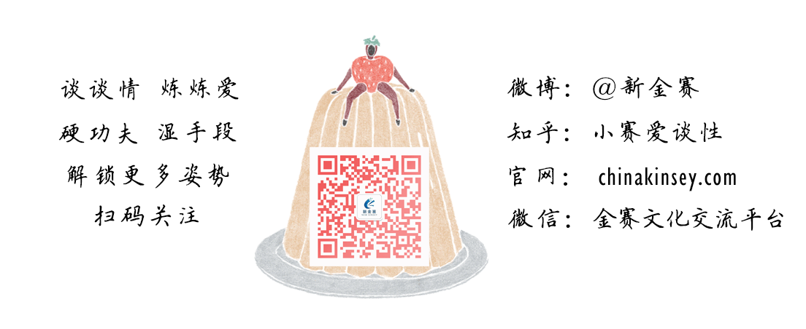

世界艾滋病日 | 谁在传播艾滋病毒？
以下文章来源于新金赛 ，作者新金赛
“新金赛”是一家由一群性学研究生创立的集性教育推广与培训、性心理咨询与答疑、性玩具调研与销售为一体的新型创业公司。 “新金赛”愿成为中国性学领域的领军人，高举科学旗帜，做中国性教育和性学研究的推动者和领跑者。
艾滋病，1981年在美国首次发现和确认。全名为"获得性免疫缺陷综合征"，为提高人们对艾滋病的认识，世界卫生组织于1988年1月将每年的12月1日定为世界艾滋病日，号召世界各国和国际组织在这一天举办相关活动，宣传和普及预防艾滋病的知识。
2016年世界艾滋病日宣传活动的主题是“携手抗艾，重在预防”。
自1985年传入中国，人们对艾滋病的了解越来越多，但更多的是“谈艾色变”，对艾滋病传播的主要途径、防治重点等问题，仍存在认知误区。
一组数据
▽
图片来源：财新网
资料来源：《中国家庭发展报告2015》、《2014年中国艾滋病防治进展报告》
防艾工作是一个社会问题，每个人都应该对艾滋病有更多了解。然而仅从一些报道的标题，你并不能对艾滋病有更多认识，因为它似乎只告诉了我们“男男性行为”会造成多么可怕的结果。
作为一名性教育工作者，我更希望媒体在12.1世界艾滋病日来临之际将焦点定在“艾滋病”上，而不是某类人群上。让大众知道更多关于艾滋病究竟是怎么回事儿，如何应对，这才是对社会防艾工作真正有利的事情。
艾滋病病毒的传播是不是和某类人群有直接关系呢？
如果是，那这类人群是不是就罪不可赦呢？
研究发现，女同之间艾滋病病毒感染率最低，如果艾滋病的确和人群有关，按照这样的逻辑，我们是不是应该再写一篇题为“女女同性有利于降低艾滋病感染风险”的文章来鼓励女人们选择同性性行为？
答案当然是否定的，作为科普人员，我们都明白一个原则那就是“要澄清事实”，而不是制造任何歧视，因为歧视并不能解决任何问题。在此，我们不讨论性倾向的事实，而要阐明艾滋病的相关真相。
HIV感染者中男男性接触者所占比例是多少？
这个问题的答案，我们只能从相关研究报告中获得。我们暂且把“男男性接触者感染HIV的比例最高”当成一个事实，那这样的事实是不是就能推断出“大部分艾滋病病毒的传播是由男同引起”这样的结论？
两个看似相似的描述，实际上说了两件不同的事情，一个是现象，一个是原因，它们之间并没有直接的关联，就好比喜欢吃东西和长胖之间并没有直接的关联。
一个人长胖并不只是因为他贪吃，还可能是因为他选择了高热量的食物，或者是因为饮食不规律，又或者是因为他不爱运动等等。
知道了真相，你就不用因为担心长胖去节食而损害了自己的健康，你能够制定出合理的饮食计划，在瘦身的同时也收获了健康。
对于HIV传播这件事来说，道理也是如此：知道了真相，你便不会因为畏惧而对感染者敬而远之，你能够在保护好自己的同时也减少对感染者的歧视。如此协同，防艾工作才能真正顺利开展起来，一个相互排斥、充满误解的世界只会让社会文明的进步的脚步变缓。
那么，真相到底如何？
在学界，至少是在性学/性教育界有一句耳熟能详、深入人心的话：“艾滋病病毒的传播是因为高危行为，而不与某类人群有直接的关系。”
什么样的行为是高危行为呢？
同性性行为算是高危行为吗，如果不算，那为什么感染这种，男男性接触人群的比例这么高呢？
高危行为是相对于感染艾滋病病毒风险而言的，要对高危行为有更多认识，我们就不得不对艾滋病的传播条件多一些认识了。
艾滋病病毒传播有三个重要的条件即数量、质量和体液交换：艾滋病病毒量、病毒的活性必须达到一定标准才具有传播性，而感染HIV一个先决条件便是一个人在性行为时与他人发生了体液交换。
因此，高危行为的最大特点就是发生了体液交换，即一方体液进入到另一方体内。
如何降低性行为的危险程度？
高危行为造成感染HIV通常有三种途径——性传播、血液传播及母婴传播，这三个途径都可能发生体液交换。
那么发生性行为时，具体来说，高危行为就是无保护的插入式性行为（阴·道·交、肛·交和口·交等）。
要避免“高危”就得选择安全性行为（采取保护措施，避免接触到他人的体液），譬如爱抚、触摸、使用情趣用品、正确使用安全套和润滑剂的插入式性行为。
你如果把艾滋病的三种传播途径背得滚瓜烂熟，却没明白要避免体液交换，你仍然无法保证自己的安全。
选择安全性行为，在性行为时采取安全措施可以减少性病/艾滋病传播和意外怀孕等风险，这是让我们保护好自己重要信息。
所以，同性性行为本身并不是高危性行为。不论人群是男男、男女还是女女，发生性行为时都避免不了发生体液的排出和交换，如果忽视了采取安全措施，任何一种人际性接触都会变得危险。
感染者中男男性接触者比例最高，这一结果的出现有着生理层面以及社会层面的原因，在此我们不展开讨论。
但尽管这些因素决定了男男性接触人群感染率高，感染的原因仍然不是“他们发生了同性性行为”，而是部分人发生了高危行为——没有采取安全措施，而且，这部分人的行为倾向也并不意味着整个男男性接触群体都有这样的行为。
是否感染艾滋病并不是由你是什么样的人而决定，而是由你的行为决定，这便是你我都该知道的真相。
“歧视源于偏见，偏见源于无知”，
在做性教育的过程中我们一直会强调这样一句话，只有不断地普及性教育才能减少人们的错误认知，才能让防艾工作向着零歧视的目标迈进。
然而我们做性教育的最终目的并不只是为了消除歧视，这样坚持是更是为了最终构建一个和谐的社会。
无论你是感染者还是非感染者、你是男是女、你喜欢同性还是异性，只有大家都明白真相、彼此接纳、团结一致，共同参与到防艾工作中来，才能让人类在与艾滋病病毒的斗争中迈向胜利。
#话题互动#
与艾滋病病毒携带者做朋友是一种什么感觉
私信或评论吧
Bluesea | 有性青年
人类性学方向研究生、讲师、研究员
本文首发【新金赛】官网，特约专稿，欢迎分享，欢迎点赞，原创不易，未经允许，不得转载。擅自转载将追究法律责任。本文不代表本网观点。
本文授权转载自专业的性健康教育咨询平台：新金赛（chinakinsey）
那些年错过的性教育，都在新金赛这里补回来。
谈谈情、炼炼爱、硬功夫、湿手段。
大胆谈性，做一个有性青年。
更多好玩请关注我们
微博@新金赛
微信公众号@金赛文化交流平台
官网：chinakinsey.com

 点击下方“阅读原文”查看《大选对美国人的性生活造成了哪些影响》
点击下方“阅读原文”查看《大选对美国人的性生活造成了哪些影响》